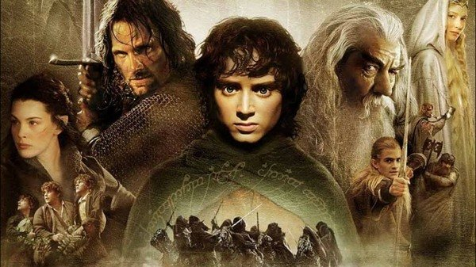
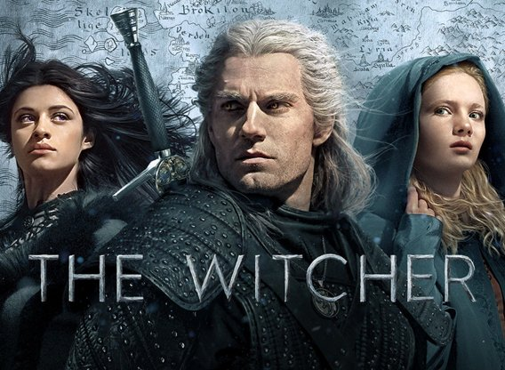
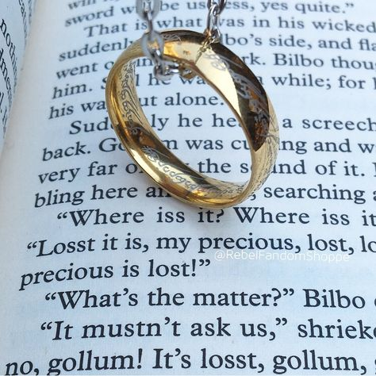
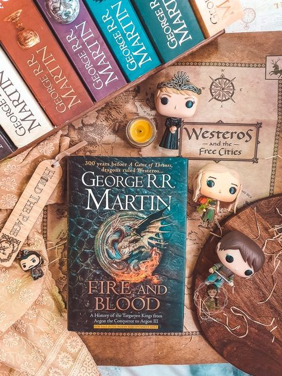

On the big screen
LOTR
The Lord of the Rings is a film series of three epic fantasy adventure films directed by Peter Jackson, based on the novel written by J. R. R. Tolkien. Set in the fictional world of Middle-earth, the films follow the hobbit Frodo Baggins as he and the Fellowship embark on a quest to destroy the One Ring, to ensure the destruction of its maker, the Dark Lord Sauron. ...The Fellowship eventually splits up and Frodo continues the quest with his loyal companion Sam and the treacherous Gollum. Meanwhile, Aragorn, heir in exile to the throne of Gondor, along with Legolas, Gimli, Merry, Pippin and the wizard Gandalf, unite to rally the Free Peoples of Middle-earth in the War of the Ring in order to aid Frodo by weakening Sauron's forces. The three films were shot simultaneously and entirely in Jackson's native New Zealand from 11 October 1999 until 22 December 2000, with pick-up shots done from 2001 to 2004. It was one of the biggest and most ambitious film projects ever undertaken, with a budget of $281 million. An extended edition of each film was released on home video a year after its theatrical release. The Lord of the Rings is widely regarded as one of the greatest and most influential film series ever made. It was a major financial success and is among the highest-grossing film series of all time with over $2.9 billion in worldwide receipts. Each film was critically acclaimed and heavily awarded, winning 17 out of their 30 Academy Award nominations.
Game of Thrones
 Game of Thrones is an American fantasy drama television series created by David Benioff and D. B. Weiss for HBO. It is an adaptation of A Song of Ice and Fire, George R. R. Martin's series of fantasy novels, the first of which is A Game of Thrones.
The show was both produced and filmed in Belfast and elsewhere in the United Kingdom.
Filming locations also included Canada, Croatia, Iceland, Malta, Morocco, and Spain.
...The series premiered on HBO in the United States on April 17, 2011, and concluded on May 19, 2019, with 73 episodes broadcast over eight seasons.
Set on the fictional continents of Westeros and Essos, Game of Thrones has several plots and a large ensemble cast and follows several story arcs.
One arc is about the Iron Throne of the Seven Kingdoms and follows a web of alliances and conflicts among the noble dynasties either vying to claim the throne or fighting for independence from it.
Another focuses on the last descendant of the realm's deposed ruling dynasty, who has been exiled and is plotting a return to the throne,
while another story arc follows the Night's Watch, a brotherhood defending the realm against the fierce peoples and legendary creatures of the North.
Game of Thrones is an American fantasy drama television series created by David Benioff and D. B. Weiss for HBO. It is an adaptation of A Song of Ice and Fire, George R. R. Martin's series of fantasy novels, the first of which is A Game of Thrones.
The show was both produced and filmed in Belfast and elsewhere in the United Kingdom.
Filming locations also included Canada, Croatia, Iceland, Malta, Morocco, and Spain.
...The series premiered on HBO in the United States on April 17, 2011, and concluded on May 19, 2019, with 73 episodes broadcast over eight seasons.
Set on the fictional continents of Westeros and Essos, Game of Thrones has several plots and a large ensemble cast and follows several story arcs.
One arc is about the Iron Throne of the Seven Kingdoms and follows a web of alliances and conflicts among the noble dynasties either vying to claim the throne or fighting for independence from it.
Another focuses on the last descendant of the realm's deposed ruling dynasty, who has been exiled and is plotting a return to the throne,
while another story arc follows the Night's Watch, a brotherhood defending the realm against the fierce peoples and legendary creatures of the North.
The Witcher
The Witcher is an American fantasy drama series produced by Lauren Schmidt Hissrich. It is based on the book series of the same name by Polish writer Andrzej Sapkowski. The first season, consisting of eight episodes, was released on Netflix in its entirety on December 20, 2019. ...Before the first season had been released, Netflix announced a second eight-episode season, to be released in 2021; production was scheduled to commence in London in early 2020. Set in a fictional world, on a landmass known as "the Continent" where the culture is styled in a mix of fantasy elements from the Middle Ages and Renaissance. The Witcher follows the story of solitary monster hunter Geralt of Rivia (Henry Cavill), sorceress Yennefer of Vengerberg (Anya Chalotra), and Cintran princess Ciri (Freya Allan), who find their lifes tied together. The first season is based on The Last Wish and Sword of Destiny, a collection of short stories which precede the main Witcher saga. It explores formative events that shaped the three lead characters, prior to their first encounters with each other.
blank line
Novels
LOTR
The Lord of the Rings is a film series of three epic fantasy adventure films directed by Peter Jackson, based on the novel written by J. R. R. Tolkien. Set in the fictional world of Middle-earth, the films follow the hobbit Frodo Baggins as he and the Fellowship embark on a quest to destroy the One Ring, to ensure the destruction of its maker, the Dark Lord Sauron. ...The Fellowship eventually splits up and Frodo continues the quest with his loyal companion Sam and the treacherous Gollum. Meanwhile, Aragorn, heir in exile to the throne of Gondor, along with Legolas, Gimli, Merry, Pippin and the wizard Gandalf, unite to rally the Free Peoples of Middle-earth in the War of the Ring in order to aid Frodo by weakening Sauron's forces. The three films were shot simultaneously and entirely in Jackson's native New Zealand from 11 October 1999 until 22 December 2000, with pick-up shots done from 2001 to 2004. It was one of the biggest and most ambitious film projects ever undertaken, with a budget of $281 million. An extended edition of each film was released on home video a year after its theatrical release. The Lord of the Rings is widely regarded as one of the greatest and most influential film series ever made. It was a major financial success and is among the highest-grossing film series of all time with over $2.9 billion in worldwide receipts. Each film was critically acclaimed and heavily awarded, winning 17 out of their 30 Academy Award nominations.
Game of Thrones
Game of Thrones is an American fantasy drama television series created by David Benioff and D. B. Weiss for HBO. It is an adaptation of A Song of Ice and Fire, George R. R. Martin's series of fantasy novels, the first of which is A Game of Thrones. The show was both produced and filmed in Belfast and elsewhere in the United Kingdom. Filming locations also included Canada, Croatia, Iceland, Malta, Morocco, and Spain. ...The series premiered on HBO in the United States on April 17, 2011, and concluded on May 19, 2019, with 73 episodes broadcast over eight seasons. Set on the fictional continents of Westeros and Essos, Game of Thrones has several plots and a large ensemble cast and follows several story arcs. One arc is about the Iron Throne of the Seven Kingdoms and follows a web of alliances and conflicts among the noble dynasties either vying to claim the throne or fighting for independence from it. Another focuses on the last descendant of the realm's deposed ruling dynasty, who has been exiled and is plotting a return to the throne, while another story arc follows the Night's Watch, a brotherhood defending the realm against the fierce peoples and legendary creatures of the North.
The Witcher
The Witcher is an American fantasy drama series produced by Lauren Schmidt Hissrich. It is based on the book series of the same name by Polish writer Andrzej Sapkowski. The first season, consisting of eight episodes, was released on Netflix in its entirety on December 20, 2019. Before the first season had been released, Netflix announced a second eight-episode season, to be released in 2021; production was scheduled to commence in London in early 2020. ...Set in a fictional world, on a landmass known as "the Continent" where the culture is styled in a mix of fantasy elements from the Middle Ages and Renaissance. The Witcher follows the story of solitary monster hunter Geralt of Rivia (Henry Cavill), sorceress Yennefer of Vengerberg (Anya Chalotra), and Cintran princess Ciri (Freya Allan), who find their lifes tied together. The first season is based on The Last Wish and Sword of Destiny, a collection of short stories which precede the main Witcher saga. It explores formative events that shaped the three lead characters, prior to their first encounters with each other.